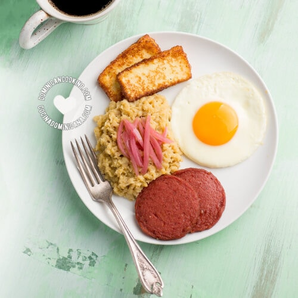

Mangu Recipe

A Dominican delicacy, prepared for the early mornings on the island
Mangu consists of 4 main ingredients: plantains, salami, eggs, and cheese. How you combine or what you
add to them will depend on what you personally like and the part of the country that you are from. A main addition added
to the plantains "the mangu" is sauteed red onions, although it is not a requirement for the dish. The salami, eggs and cheese are
known as the "Tres Golpes". Similarly to the onions, a person may add all or leave out ones they do not want.
Ingredients
- 4 green plantains
- 4 tablespoons butter
- 1 cup of reserved water from the pot
- Salt
Steps
- Peel the plantains and cut into pieces about 1/2 inch thick. Boil in salted water for 20 minutes, until a fork
easily pierces the pieces.
- As the plantains finish cooking, reserve 1 cup of the water from the pot, then drain the rest and pour the
plantain pieces into a large bowl over the butter. Begin mashing, adding the 1 cup water in increments. You can add it a
little at a time, but remember mangu thickens as it sits so you should use the whole cup of water. Mash to the consistency you desire.
Let sit for a few minutes before serving to allow it to “set”, season with salt. Top with pickled red onions.